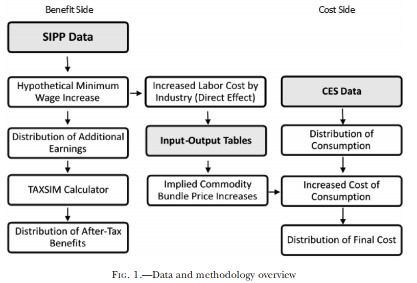
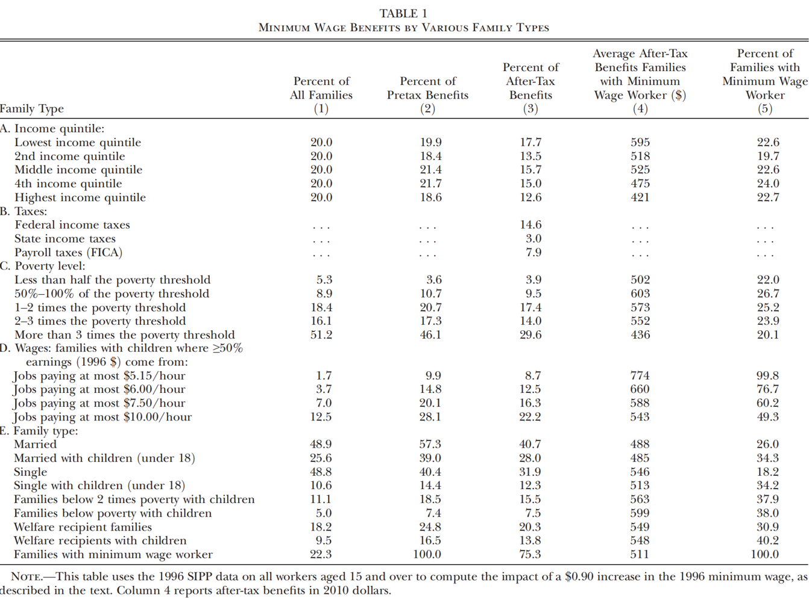
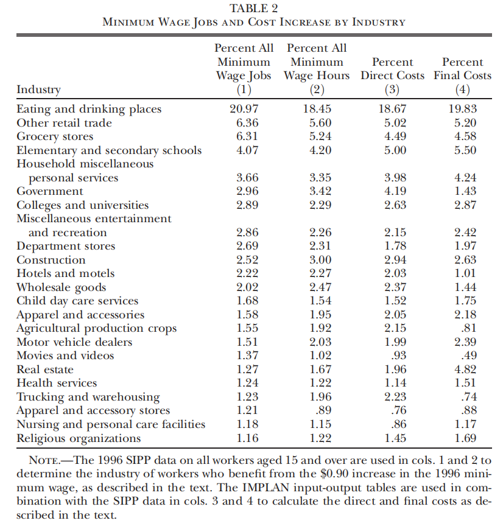
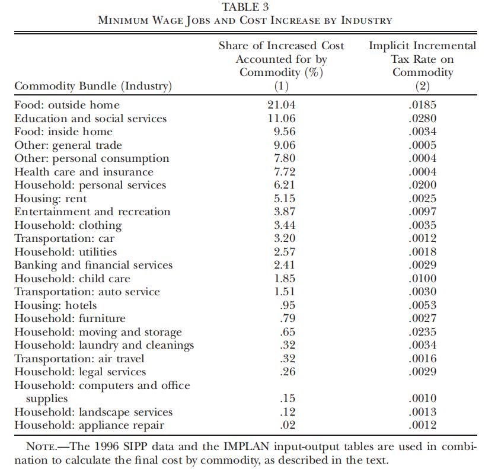
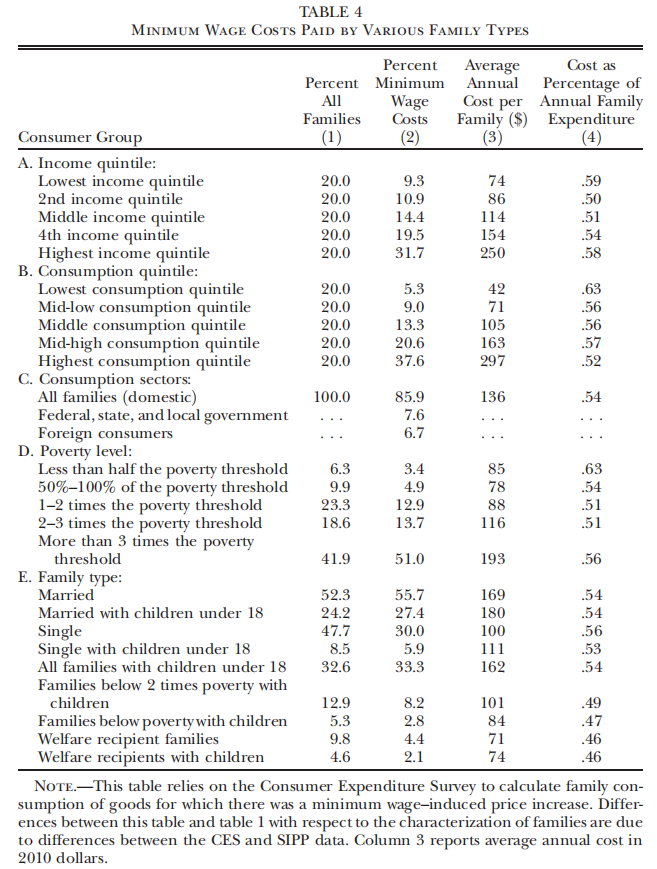
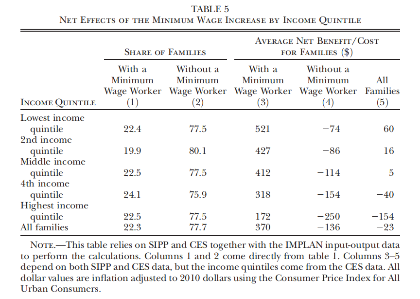
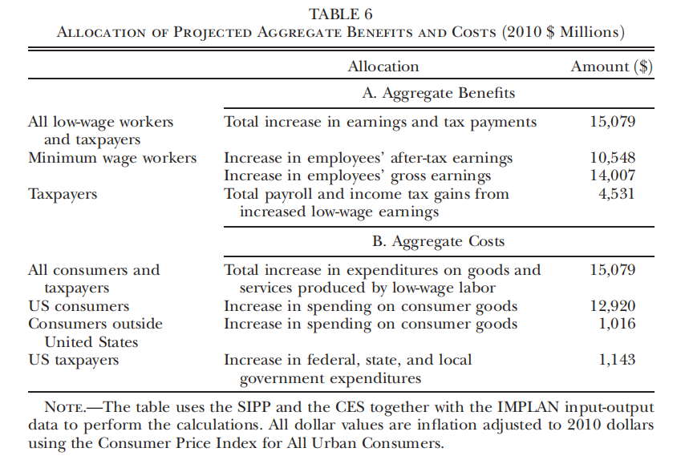

最低工资真的能帮到低收入群体吗？
2021-08-16
Paper: MaCurdy, Thomas, "How Effective Is the Minimum Wage at Supporting the Poor?," Journal of Political Economy, 123 (2015), 497–545.
I thank Professor Ye'an ZHOU for insightful comments on this introductory article.
This article can also be found here: https://mp.weixin.qq.com/s/K0oPSpvBXyloQrkCdkWLKA
一、引言
有关最低工资的争论时至今日还未有定论，争论的焦点在于，最低工资能不能视为一种帮助低收入群体的政策？
相当一部分人认为，提高最低工资对低收入群体是有帮助的。这种想法主要依赖于两点，一是最低工资确实能够提高低收入群体的收入，二是最低工资不会造成社会总福利的损失(或者损失很小)。最低工资的反对者曾经提出，最低工资可能会造成失业或者工作时间的减少，而且获益的人不一定是低收入家庭中负担家计的人，他们也可能是来自富人家庭赚零花钱的儿童。但近年来的研究表明，最低工资造成的失业微乎其微(Card & Krueger, 1994; Zavodny, 2000; Dube et al., 2007; Dube et al., 2010)。支持者们也辩护道，尽管最低工资工人不都是低收入家庭的成员，但是政策或多或少也是对低收入家庭有帮助的。
实际上，政策都是有成本的。就算政策没有减少社会总福利，也可能存在着利益的再分配。如果像最低工资的倡导者那样假定最低工资不会导致就业减少，那么增加的用工成本只可能通过两种方式化解：要么企业减少利润，要么企业提高商品价格。不过，企业减少利润的可能性并不大，因为资本的流动性是很强的，如果某个行业的利润下降，资本就可能会流出。而且，那些有很多最低工资工人的行业一般都是竞争性很强的行业，比如食品、零售业等等，这些行业的利润本来就不高，面临成本增加时，行业的竞争价格通常也会随之提高。许多研究也表明，最低工资往往会导致商品价格的提高(Aaronson, 2001; Lemos, 2006; MacDonald & Aaronson, 2006; Aaronson et al., 2008)。商品价格的提高相当于向全体消费者征收了一笔税，因此最低工资的成本由全体消费者来承担。同时，就业不减少的假设意味着最低工资工人的产出是不变的，因此消费者的消费量并不会因为价格的提高而下降。
本文作者站在最低工资支持者的立场上做出理论假设：最低工资不会造成就业损失、会导致产品价格的上升、消费者的消费量保持不变，通过将最低工资政策的收益和成本相结合，分析政策对不同类型家庭的净效应，从而对政策效果做出更加全面的评价。作者发现，即使是像最低工资支持者假设的那样，在考虑净效应之后，最低工资政策也很难称得上是帮助低收入群体的政策。
二、数据与估计方法
1997年，美国的最低工资由4.25美元/小时上涨到了5.15美元/小时，作者主要考察了这一政策带来的变化。首先，作者使用了1996年的SIPP(Survey of Income and Program Participation)调查数据，该数据包含了对受访者工资水平、收入来源、工作时间、人口和家庭特征等方面的信息。作者基于就业不变的假设，利用数据与国家经济研究局(NBER)的税收模拟系统(TAXSIM)，估计了最低工资提升后收益的分配。
最低工资政策的成本是商品价格的上升：最低工资的上升使得企业用工成本增加，因此企业需要提高最低工资工人生产的商品价格来覆盖成本。为了评估最低工资成本在不同家庭中的分配，作者使用了与SIPP同期的CES(Consumer Expenditure Survey)调查数据，该调查考察了家庭在各种商品和服务上的支出，同时也包含了一些收入指标和人口特征等。为了测算最低工资导致的价格上升，作者还使用了IMPLAN构建的国家投入-产出数据，这一数据包含了美国528个行业中雇佣、价值增值、产出、商品需求等方面的信息。
Figure 1描述了作者的整个估计方法。作者首先从SIPP数据出发，考察不同家庭中最低工资工人的数量和比例，从而反映最低工资上升带来的收益与税后收益在不同家庭中的分配(图中第一列)。同时，根据这一数据还可以测算出不同行业增加的用工成本，作者利用IMPLAN的投入-产出数据，将增加的用工成本转化为各种商品价格的上升(图中第二列)。商品价格的上升最终由全体消费者共同承担，通过CES数据，作者计算了不同类型家庭对不同商品的消费，从而估计最低工资产生的成本在不同家庭之间的分配(图中第三列)。最后，作者将收益和成本相结合，估计不同类型家庭的净收益，得到对政策效果更加全面的评估。

三、谁从最低工资政策中收益？
在这一部分中，作者主要讨论了最低工资收益在不同家庭之间的分配。根据SIPP的调查结果，作者将1996年工资等于或低于最低工资(4.25美元/小时)的工人视为最低工资工人，并假定其工资提高0.9美元/小时至新的最低工资标准(那些工资原本低于4.25美元/小时的工人，作者也假定其工资仅提高0.9美元/小时，因此依然无法达到新的最低工资标准)。同时，作者没有考虑工资提高可能存在的溢出效应，即最低工资工人的工资提高不会影响非最低工资工人的工资。
TABLE 1中的Panel A展示了最低工资在不同收入阶层中的利益分配。根据第(5)列，最低工资工人在不同收入阶层中的分布几乎是均匀的，这一发现与部分现有研究是一致的(Gramlich, 1976; Johnson & Browning, 1983; Burkhauser & Finegan, 1989; Horrigan & Mincy, 1993; Burkhauser & Sabia, 2007)。于是，第(2)列中显示，无论一个家庭的收入是高是低，其税前从最低工资中获得的收益基本上都是20%左右。不过，由于美国的所得税以家庭为单位计算，而且是累进税，所以第(3)列的税后收益有一定程度的分化，但收入最低的五分位家庭依然仅能获得全部收益的17.7%，而有超过20%的收益以税收的形式还给了政府(Panel B)。
为了评估政策的扶贫效果，作者进一步划分了家庭类型，Panel C展示了这一结果。作者根据贫困线，将家庭划分为收入低于贫困线一半、收入等于贫困线50%-100%、收入为贫困线1-2倍、收入为贫困线2-3倍、收入高于3倍贫困线这五种类型的家庭。可以发现， 税后29.6%的收益被收入高于3倍贫困线的家庭所获得，而占家庭总数14.2%的低于贫困线的家庭在税后仅仅获得了13.4%的收益。
Panel D考察的是负担家计的人(收入占家庭收入一半以上)的收入，那些家里有儿童、负担家计的人的工资低于5.15美元/小时的家庭占总数的1.7%，但税后只能获得8.7%的收益。Panel E考察了其他的家庭类型，其中最值得注意的是，家里有儿童、家庭收入低于贫困线的家庭(占5%)纳税后仅能获得7.5%的收益，家里有儿童、领取社会救济福利的家庭(占9.5%)纳税后仅能获得13.8%的收益。
上述发现均表明，真正需要帮助的群体获得的收益份额并不大，因此很难将最低工资政策视为救济低收入群体的手段。

四、谁为最低工资政策的成本买单？
这一部分讨论政策成本在不同消费者群体间的分配。最低工资的提高导致企业用工成本的增加，因此企业会提高最低工资工人生产的商品的价格。但是，这仅仅是最低工资的直接效应，因为最低工资工人生产的商品或服务除了被消费者消费，还可能成为其他行业的中间投入。所以有些行业虽然没有雇佣最低工资的工人，但是需要其他行业最低工资工人的商品或服务作为投入，因此其成本也有所提高，导致这些行业的商品价格也会提高(间接效应)。同时，这些行业的商品又可能成为其他行业的投入，不断传导，最终可能产生商品价格的普遍上涨(尽管上涨程度各不相同)。
根据SIPP数据与投入-产出数据，作者估计了不同行业用工成本增加的情况，具体的计算细节作者在原文中有更加详细的描述，读者可以进一步阅读。TABLE 2展示了影响最大的23个行业的结果。其中第(3)列展示了最低工资带来的直接成本，第(4)列展示了考虑间接成本的最终成本。可以发现，餐饮业雇佣了较大比例的最低工资工人，因此其受到了更大程度的影响。有些行业的最终成本是小于直接成本的，原因之一是这些行业的商品用于出口，因此可以将部分成本转嫁到其他国家。相反，有些行业的最终成本是大于直接成本的，比如说房地产行业承担了1.96%的直接成本，而最终成本达到了4.82%的比例。这是因为房地产行业的投入多为建筑业建造的商品房，因此建筑业增加的部分成本就转嫁到了房地产行业。可以发现，建筑业的直接成本是小于最终成本的。

TABLE 3汇报了不同商品承担的最低工资成本的比例，其中食品承担了成本中最大的比例。在第(2)列中，作者定义了“商品的隐含增值税”(该商品承担的新增成本除以总支出)，食品的税率大约为1.85%，教育和社会服务的税率大约为2.8%，这些税率看起来似乎并不大，但也已经比州一级的销售税率(state-level sales tax rates)还要大了。

TABLE 4汇报了不同类型家庭承担成本的比例。根据Panel A和Panel B的结果，负担的成本大小与支出总额更加相关(而不是总收入)，第(4)列的结果显示，支出总额最多的五分位家庭所负担的成本占总支出额的0.52%，而支出总额最少的五分位家庭所承担的成本占总支出额的0.63%，因此不同家庭承担的成本与其支出总额并不成比例，支出更少的家庭承担了更多。
可以将最低工资的成本视为为每一种商品的消费征税，不同商品的税率是不同的，这在TABLE 3中已经展示了。不同家庭负担的“税收”取决于其消费的产品，需要帮助的低收入家庭的消费主要集中于生活必需品，而这些商品恰恰来源于雇佣很多最低工资工人的行业，因此最低工资导致的“商品的隐含增值税”是一种累退税。实际上，州一级的销售税通常会免征一些公认的必需品的税，比如医疗服务、食品等，因此最低工资的成本比销售税更具累退性。

五、提高最低工资的净效应
作者在这部分综合了前文有关收益和成本的讨论，从而估计提高最低工资对于不同类型家庭的净效应。TABLE 5将家庭分为两类：有最低工资工人的家庭和没有最低工资工人的家庭。在收入最低的五分位家庭中，有最低工资工人的家庭占比22.4%，没有最低工资工人的家庭占比77.5%。显然，有最低工资工人的家庭和没有最低工资工人的家庭在净收益上出现了很大的差别，这体现出显著的再分配效应：相当于3.4个没有最低工资工人的低收入家庭均每年损失74美元(共252美元)，再加上其他收入阶层的269美元，用于补贴一个有最低工资工人的低收入家庭。同时，第(5)列的结果表明，高收入群体补贴了低收入群体。右下角的结果表明，从总体上看，价格上涨带来的损失是大于工资上涨的收益的，平均每个家庭每年损失了23美元，这部分损失由政府通过税收获得。

TABLE 6进一步整合了成本和收益在不同群体中的分配情况。Panel A从收益的角度分析。最低工资工人的年收入增加了约140亿美元，但纳税之后只能获得约100亿美元。Panel B从成本的角度分析。根据2010年的物价水平计算，1997年的最低工资上涨导致家庭年度支出增加了大约130亿美元，最低工资的成本有大约10亿美元由国外的消费者承担。

六、总结
最低工资的支持者通常认为，这一政策有利于帮助低收入群体，而且不会对社会总福利产生什么影响。然而，本文作者通过估计1997年提高最低工资后产生的利益和成本的分配，对这一观点提出了挑战。
根据最低工资支持者的假设，作者设定新增的成本均通过提高商品价格来弥补，据估计，增加的成本在一年中达到了约150亿美元。从收益方面来看，不同收入阶层群体中，拥有最低工资工人的家庭占比是差不多的，所以总体上，低收入群体从中获得的收益仅仅比高收入群体多一点点。而且，政策最需要帮助的群体——有子女的贫困线以下家庭——在税后仅能获得7.5%的收益，但却有超过20%的收益通过税收返回到了政府手中。因此，与传统观点相反，最低工资更像是在浪费低收入群体的收入。从成本方面来看，提高最低工资导致了商品价格的提高，相当于向全体消费者征收了一笔“最低工资税”，然而由于必需品价格受到的影响更大，导致低收入群体承担了更大的税率，这种累退性比一般的销售税还要严重。从净收益上看，最低工资确实起到了高收入群体补贴低收入群体的作用，但是由于低收入群体中有超过75%的家庭没有最低工资工人，因此更大比例的低收入家庭受到了不利影响。
综上，从总体上看，提高最低工资相当于征收了一笔更加累退的消费税，而其利益的分配与收入高低实际上是无关的，从中受损的低收入家庭比获益的低收入家庭还要多。作者认为，这表明最低工资政策是一种无效的反贫困政策。
补充：实证部分的理论基础
这一部分内容对应原文的第七章与附录。本文的实证部分提供了一个分析最低工资效果的实证框架，但也仅仅是一种会计结构，忽略了经济力量的影响。然而，以往有关最低工资的研究大多仅仅聚焦于劳动力市场，没能提供一个可以进行整体评估的理论框架。于是，作者在这一部分尝试构建一个可用的一般均衡理论框架，并利用这一理论框架为前文的会计结构提供理论支持，并进行一些拓展性的讨论。同时，作者构建的理论框架可以为后续讨论最低工资的研究提供参考。
如果读者感兴趣，请参见此文档：实证部分的理论基础